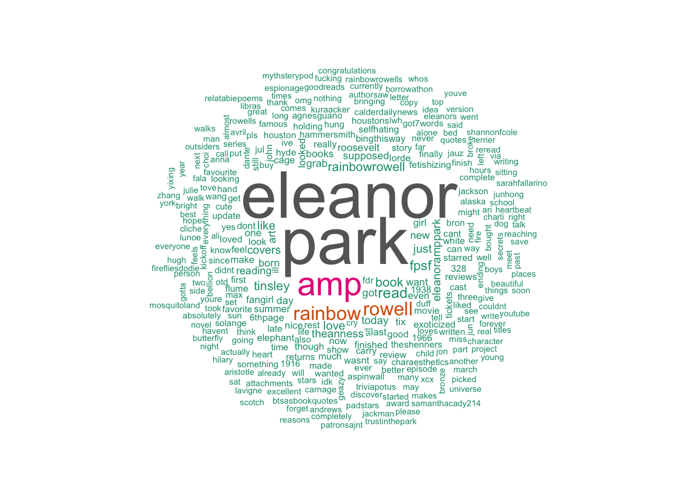

Eleanor & Park
Author: Rainbow Rowell
“What are the chances you’d ever meet someone like that? he wondered. Someone you could love forever, someone who would forever love you back? And what did you do when that person was born half a world away? The math seemed impossible.”
― Rainbow Rowell, Eleanor & Park
Summary
Two misfits. One extraordinary love.
Eleanor… Red hair, wrong clothes. Standing behind him until he turns his head. Lying beside him until he wakes up. Making everyone else seem drabber and flatter and never good enough…Eleanor.
Park… He knows she’ll love a song before he plays it for her. He laughs at her jokes before she ever gets to the punch line. There’s a place on his chest, just below his throat, that makes her want to keep promises…Park.
Set over the course of one school year, this is the story of two star-crossed sixteen-year-olds—smart enough to know that first love almost never lasts, but brave and desperate enough to try.

## [1] "Sonja_Harrison: Eleanor McMahon: Intervene to halt demolition of Heritage buildings on Gore Park, Hamilton - Sign the Petition! https://t.co/DMGGddHext"
## [1] "Sonja_Harrison: I care about preserving history in my beautiful and unique city. https://t.co/zM1PJlFsEq"
## [1] "tasuku_kyota: RT @padstars: eleanor e park | eleanor&park\n\n\"[...]She looked like art, and art wasn't supposed to look nice. It was supposed to make you f…"
## [1] "sophiejowrites: @BethanyTilston ❤❤❤ You've made me want to read it again! I'm onto Eleanor and Park now :')"
## [1] "wolfgnrg: RT @padstars: eleanor e park | eleanor&park\n\n\"[...]She looked like art, and art wasn't supposed to look nice. It was supposed to make you f…"
## [1] "thzmiths: RT @padstars: eleanor e park | eleanor&park\n\n\"[...]She looked like art, and art wasn't supposed to look nice. It was supposed to make you f…"
## [1] "starsbowie: RT @padstars: eleanor e park | eleanor&park\n\n\"[...]She looked like art, and art wasn't supposed to look nice. It was supposed to make you f…"
## [1] "padstars: eleanor e park | eleanor&park\n\n\"[...]She looked like art, and art wasn't supposed to look nice. It was supposed to… https://t.co/zqfeh9sa5z"
## [1] "costellosamanth: @SimonaTaddei Eleanor and park"
## [1] "bexyish: My new #book review is now out! Eleanor & Park by @rainbowrowell . I may gush about it slightly. https://t.co/klP4Fl4hW4 #BookBlogger #Blog\xed\xa0\xbd\xed\xb3\x9a"
## [1] "mixedsgnals: eleanor & park - so many emotions. about two unlikely partners falling in love and it shows peoples reactions to their relationship."
## [1] "frontgatetix: RT @fpsf: Don't miss Lorde, Solange, Tove Lo, Charli XCX, Anna Lunoe + more in Eleanor Tinsley Park. Grab your #FPSF Tickets! https://t.co/…"
## [1] "katkatkatt: I picked this copy of Eleanor and Park up in the charity shop. I can't wait to start reading! https://t.co/a5qjy1RQZA"
## [1] "htxconcert: RT @fpsf: Don't miss Lorde, Solange, Tove Lo, Charli XCX, Anna Lunoe + more in Eleanor Tinsley Park. Grab your #FPSF Tickets! https://t.co/…"
## [1] "DrLdar: RT @fpsf: Don't miss Lorde, Solange, Tove Lo, Charli XCX, Anna Lunoe + more in Eleanor Tinsley Park. Grab your #FPSF Tickets! https://t.co/…"
## [1] "masondeaver: 1 of 5 stars to Eleanor & Park by Rainbow Rowell https://t.co/GaueDnyDdI"
## [1] "jewelgeekyshelf: I swear to GOD I don't understand why I waited SO long to read #Eleanor&Park I absolutely love it! \xed\xa0\xbd\xed\xb8\x8d #cantputthisbookdown \xed\xa0\xbd\xed\xb8\x86"
## [1] "brittany0925: So. I just finished Eleanor & Park. I have so many feelings. [...]"
## [1] "Kerry_Captured: I can only imagine the adorable initial reaction that @OverduePod got when (in the Eleanor & Park ep) they asked for first smooch stories."
## [1] "bexyish: Once I return home, I'll be editing/posting up my new #book review for Eleanor & Park by @rainbowrowell! #BookBlogger #review \xed\xa0\xbd\xed\xb3\x9a\xed\xa0\xbd\xed\xb3\x9a"##
## The downloaded binary packages are in
## /var/folders/ny/hkylpsnn3qs2pg8wdvtfwx_m0000gn/T//Rtmp3tqrH6/downloaded_packages
Key Themes
- firstlove
- outcasts
Extras
- A New York Times Best Seller!
- A 2014 Michael L. Printz Honor Book for Excellence in Young Adult Literature
- Eleanor & Park is the winner of the 2013 Boston Globe Horn Book Award for Best Fiction Book.
- A Publishers Weekly Best Children’s Book of 2013
- A New York Times Book Review Notable Children’s Book of 2013
- A Kirkus Reviews Best Teen Book of 2013
- An NPR Best Book of 2013
summary from Goodreads
extras from Barnes & Noble